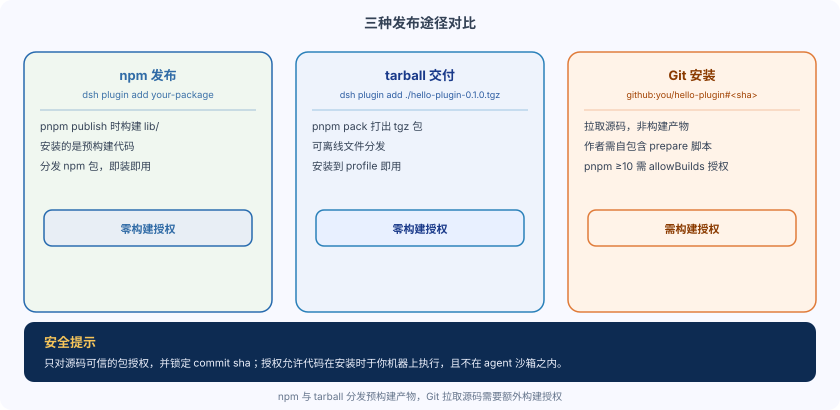

DeepSeek Harness Publish Plugin: npm / GitHub / tarball
Local installation already works; we can distribute the plugin to others for use.
Publishing to a registry is not required; there are three approaches: npm, tarball, and Git.
The three have completely different requirements for build artifacts; choosing wrong will cause pitfalls on the user side.
Comparison of the three distribution methods
The official documentation gives three distribution methods, with the core difference being whether pre-built artifacts are distributed.

| Method | User installation command | What is being installed | Whether build approval is required |
|---|---|---|---|
| npm publish | dsh plugin add your-package | Pre-builtlib/Code | Not Required |
| tarball delivery | dsh plugin add ./hello-plugin-0.1.0.tgz | pnpm packBuilt package | Not Required |
| Git installation | dsh plugin --profile demo add github:you/hello-plugin | Source code (not build output) | Requires (pnpm ≥ 10) |
Neither npm nor tarball requires any build permissions, making them suitable for scenarios where you don't want users to do extra authorization.
Git installation is the most flexible, but it must get past the "build script" hurdle.
Git installation: the build script hurdle
Git installation pulls source code, not build artifacts.
No step runs your build script, so when a TypeScript package arrives, there is nolib/output, and loading will fail.
Both sides must each do one thing.
On the author's side, you need to provide aprepareScript.
pnpm runs it after a git install, building the publish entry point from source.
It must be self-contained: it cannot assume context that only exists in the development environment, such as having a monorepo checkout nearby.
turtle-uiThis is a usable example: its prepare runs a dedicated tsdown config that directly transpilessrc/, without project references and without type checking.
Example
"name": "dsh-hello-plugin",
"scripts": {
"prepare": "tsdown -c tsdown.publish.ts"
}
}
The prepare script above must be self-contained: directly transpilesrc/, not depending on the adjacent monorepo checkout.
On the user's side, you need to approve the build.
pnpm ≥ 10 refuses to run prepare scripts for git dependencies until explicitly allowed, so the first add will fail.
dsh will point out the fix: copy the exact package key that pnpm printed into that profile'spnpm-workspace.yaml。
dsh plugin --profile demo add github:you/hello-plugin
The first add will fail because prepare is not authorized, and pnpm will print the exact package key.
Copy it into the profile's pnpm-workspace.yaml, like this.
Example
# Copy the exact package key printed by pnpm, allowing it to run prepare
allowBuilds:
dsh-hello-plugin: true
Then run add again.
dsh plugin --profile demo add github:you/hello-plugin # 第二次通过
Be honest about this approval: it allows the package's code to execute on your machine during installation, not inside any sandbox that the agent runs.
Only authorize packages whose source code is trusted, and lock the commit (
github:you/hello-plugin#<sha>), so that future pushes cannot silently change what actually runs.
The installation syntax for locking a commit is as follows.
dsh plugin --profile demo add github:you/hello-plugin#a1b2c3d # 锁定到具体 commit
npm and tarball: build-free authorization
If you don't want users to do authorization, instead distribute build artifacts.
Neither of the following two forms requires any build permissions.
The first approach: publish to npm.
Inpnpm publishBuilt at the timelib/, the userdsh plugin add your-packageWhat gets installed is prebuilt code.
# 作者侧：先构建再发布 pnpm build pnpm publish # 用户侧：安装的是预构建代码，无需授权 dsh plugin add your-package
The second option: delivering the tarball.
usepnpm packPackage, user executesdsh plugin add ./hello-plugin-0.1.0.tgz。
# 作者侧：打出 tgz pnpm pack # 用户侧：直接安装 tarball 文件 dsh plugin add ./hello-plugin-0.1.0.tgz
Recommendations: if the source code is trusted and you want to skip the build process, use git installation and lock the commit; for regular users, prefer publishing to npm or delivering a tarball, allowing users to install directly with zero authorization.
Summary and self-test
The three distribution methods differ by whether pre-built artifacts are distributed: npm and tarball require no build authorization; Git installation pulls source code and requires the author's self-contained prepare script and the user's allowBuilds authorization.
Self-test questions:
- Why does git installation fail for TypeScript packages? What does the author need to do?
- When pnpm ≥ 10 users fail on the first add, how does dsh suggest fixing it?
- Why is it recommended to lock the commit sha?